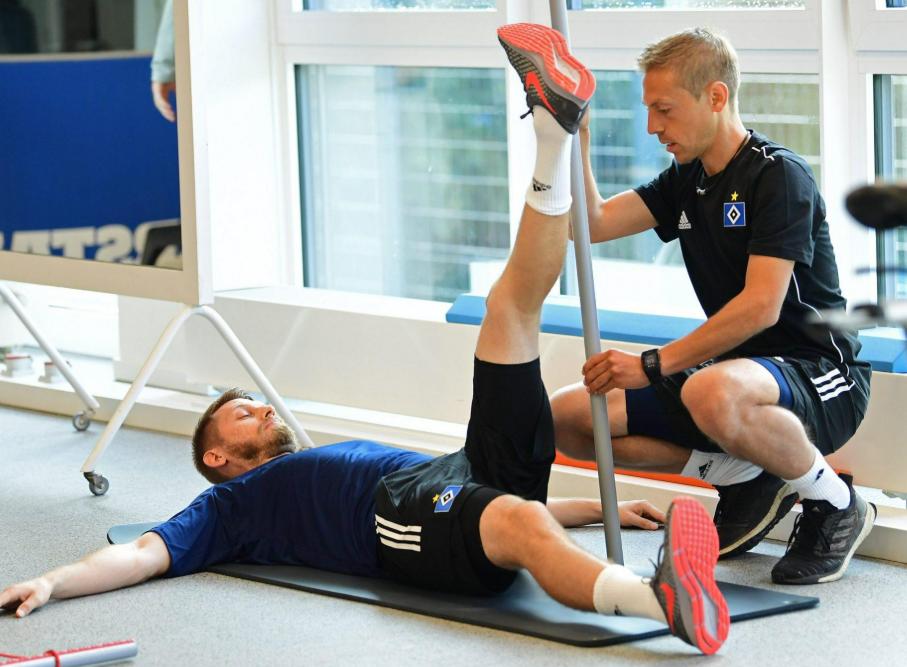
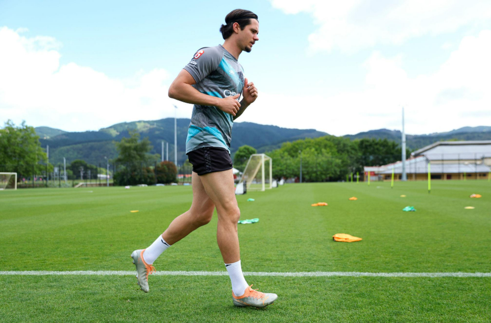

Our Mission.
Helping you recover stronger, move better, and return to what you love.
At PhysioCare Clinic, our mission is to provide personalized physiotherapy and rehabilitation services that help individuals restore movement, rebuild strength, and improve their quality of life. We believe that every recovery journey deserves careful attention, professional guidance, and a treatment approach tailored to individual needs.
With a particular focus on sports physiotherapy and football-related injuries, we aim to support athletes throughout their rehabilitation journey, from injury management and physical recovery to preparing for a safe and confident return to sport. Whether you are a professional athlete, a recreational player, or someone seeking relief from physical discomfort, your recovery goals remain at the center of our approach.
Your recovery is our priority. Your progress is our purpose.


Our Vision.
A future where every individual can move freely, perform confidently, and live without unnecessary physical limitations.
Our vision is to become a trusted destination for physiotherapy and sports rehabilitation in Lebanon, recognized for personalized care, continuous improvement, and a commitment to helping patients achieve their full physical potential.
We aspire to support athletes, especially football players, not only in recovering from injuries but also in developing strength, improving movement, and reducing the risk of future injuries. By promoting education, prevention, and long-term physical well-being, we aim to make rehabilitation an essential part of a healthier, more active lifestyle.
Inspiring better movement today, building stronger futures tomorrow.
What We Treat.
From football injuries and sports rehabilitation to everyday musculoskeletal conditions, we provide personalized physiotherapy focused on restoring movement, improving strength, and supporting your recovery.
Everything You Need to Know
Have questions about physiotherapy, sports rehabilitation, or getting started at PhysioCare Clinic? Find the answers below.
What conditions does PhysioCare Clinic treat?
PhysioCare Clinic focuses on sports physiotherapy, particularly football-related injuries, alongside general musculoskeletal rehabilitation. Treatment areas may include knee and ankle injuries, muscle strains, ligament injuries, back and neck pain, and post-surgical rehabilitation. Treatment suitability is determined through an individual assessment.
How do I book an appointment?
You can contact PhysioCare Clinic by calling +961 76 926 173, sending a message through WhatsApp, or emailing info@physiocare-clinic.com . You can also use the contact form on our website.
Do you treat football-related injuries?
Football rehabilitation is a key focus of PhysioCare Clinic. We aim to support players recovering from common injuries such as ankle sprains, hamstring strains, knee injuries, and muscle-related problems. Rehabilitation plans are tailored to the athlete's condition, goals, and stage of recovery.
How many physiotherapy sessions will I need?
The number of sessions depends on the type and severity of your condition, your recovery progress, and your rehabilitation goals. Following your initial assessment, your physiotherapist can recommend a suitable treatment plan and review your progress regularly.
Can physiotherapy help prevent sports injuries?
Physiotherapy can play an important role in reducing certain injury risks through strength training, mobility exercises, movement assessment, and individualized conditioning programs. Although no program can eliminate injury risk, appropriate preparation may help athletes perform more safely.
Where is PhysioCare Clinic located?
PhysioCare Clinic is located in Beirut, Marfaa, Wigand Street, Alnahar Building, Ground Floor, Lebanon. Contact us if you need assistance finding the clinic.
Is physiotherapy painful?
Physiotherapy should be adapted to your comfort level and condition. Some exercises or techniques may cause temporary discomfort, but treatment should not involve unnecessary or excessive pain. Always communicate any discomfort to your physiotherapist.
When can I return to football after an injury?
Returning to football depends on the injury, healing progress, strength, mobility, and functional performance. Your physiotherapist can help assess your readiness through a progressive rehabilitation program. Returning too early may increase the risk of reinjury.
What should I bring to my first appointment?
Bring any relevant medical reports, imaging results, or referral documents you have. Comfortable clothing that allows easy movement is recommended, particularly if your appointment involves a sports injury assessment.
Do I need a doctor's referral?
Referral requirements may depend on your medical condition, insurance coverage, and applicable regulations. Contact PhysioCare Clinic before your appointment to confirm whether any referral or medical documentation is required.